생산자동화산업기사 (2009-08-30 기출문제)
1과목: 기계가공법 및 안전관리
1. 모듈 5, 잇수 36인 표준 스퍼기어를 절삭하려면 바깥지름은 몇 mm로 가공하여야 하는가?
- 180
- 190
- 200
- 550
(정답률: 알수없음)

2. 삼선법에 의해 미터나사의 유효지름 측정시 피치가 1mm인 나사에 사용할 삼선의 지름은 약 몇 mm인가?
- 0.5773
- 0.8660
- 1.0000
- 1.7320
(정답률: 알수없음)
3. 연삭액의 작용에 대한 설명으로 틀린 것은?
- 연삭열을 흡수하고 제거시켜 공작물의 온도를 저하시킨다.
- 눈메움 방지와 공작물에 부착한 절삭칩을 씻어낸다.
- 윤활막을 형성하여 절상능률을 저하시킨다.
- 방청제가 포함되어 연삭 가공면을 보호하고 연삭기의 부식을 방지한다.
(정답률: 알수없음)
4. 공구는 상하 직선운동을 하여 테이블은 직선운동과 회전 운동을 하여 키 홈, 스플라인, 세레이션 등의 내면가공을 주로 하는 공작기계는?
- 세이퍼
- 슬로터
- 플레이너
- 브로칭
(정답률: 알수없음)
5. 미식선반에서 피치가 P이고, 일강의 나사피치가 p이며, 주축의 변환기어 잇수 Zs이고, 리드스크루의 변환 기어 잇수 ZL이라면 선반의 변환기어 공식에서, (p/P)의 값을 구하는 식으로 옳은 것은?
- 2Zs/ZL
- 2ZL/Zs
- Zs/ZL
- ZL/Zs
(정답률: 알수없음)
6. 연삭조건에 따른 입도의 선정에서 거친 입도의 연삭숫돌 선택 기준으로 올바른 것은?
- 공구 연삭
- 다듬질 연삭
- 경도가 크고 메진 가공물의 연삭
- 숫돌과 가공물의 접촉 면적이 클 때의 연삭
(정답률: 알수없음)
7. 각각의 스핀들에 여러 종류의 공구를 고정하여 드릴가공, 리머가공, 탭가공 등을 순서에 따라 연속적으로 작업할 수 있는 드릴링 머신은?
- 탁상 드릴링 머신
- 다두 드릴링 머신
- 다축 드릴링 머신
- 레디얼 드릴링 머신
(정답률: 알수없음)
8. 구동 전동기로 펄스 전동기를 이용하여 제어장치로 입력된 펄스 수만큼 움직이고 검출기나 피드백 회로가 없으므로 구조가 간단하며 펄스 전동기의 회전 정밀도와 불 나사의 정밀도에 직접적인 영향을 받는 방식은?
- 개방 회로 방식
- 반폐쇄 회로 방식
- 폐쇄 회로 방식
- 하이브리드 서보 방식
(정답률: 알수없음)
9. 테이퍼의 양끝 지름 중 큰 지름이 23.826mm, 작은 지름이 19.760mm, 테이퍼 부분의 길이가 81mm, 공작물 전체의 길이는 150mm이다. 심압대의 편위량은 약 몇 mm인가?
- 1.098
- 2.196
- 3.765
- 7.530
(정답률: 알수없음)
10. 탭으로 암나사 가공 작업시 탭의 파손원인이 아닌 것은?
- 탭 재질의 경도가 높은 경우
- 탭이 경사지게 들어간 경우
- 탭가공 속도가 빠른 경우
- 탭이 구멍바닥에 부딪쳤을 경우
(정답률: 알수없음)
11. 고 정밀도의 불나사(Ball Screw)를 가장 많이 사용하고 있는 공작 기계는?
- CNC공작기계
- 범용선반
- 밀링머신
- 슬로터
(정답률: 알수없음)
12. 밀링작업에 대한 안전사항으로 틀린 것은?
- 가동 전에 각종 레버, 자동이송, 급속이송장치 등을 반드시 점검한다.
- 정면커터로 절삭작업을 할 때 절삭상태의 관찰은 커터 날 끝과 같은 높이에서 한다.
- 주측속도를 변속시킬 때에는 반드시 주축이 정지한 후에 변환한다.
- 밀링으로 절삭한 칩은 날카로우므로 주의하여 청소한다.
(정답률: 알수없음)
13. 드릴의 각부 명칭 중에서 드릴의 홈을 따라서 만들어진 좁은 날로, 드릴을 안내하는 역할을 하는 것은?
- 마진
- 랜드
- 시닝
- 탱
(정답률: 알수없음)
14. 슈퍼피니싱(superfinishing)의 특징과 거리가 먼 것은?
- 진폭이 수 mm이고 진동수가 매분 수백에서 수천의 값을 가진다.
- 가공열의 발생이 적고 가공 변질층도 작으므로 가공면 특성이 양호하다.
- 다듬질 표면은 마찰계수가 작고, 내마멸성, 내식성이 우수하다.
- 다듬질면에 구성인선이 발생한다.
(정답률: 알수없음)
15. 연마제를 가공액과 혼합하여 가공물 표면에 압축공기를 이용하여 고압과 고속으로 분사시켜 가공물 표면과 충돌시켜 가공하는 입자 가공법은?
- 액체호닝
- 숏 피닝
- 래핑
- 배럴가공
(정답률: 알수없음)
16. 대형의 공작물, 중량물(重量物)의 대형 평면이나 홈 등의 절삭에 가장 적합한 밀링머신은?
- 수직 밀링머신
- 모방 밀링머신
- 만능 밀링머신
- 플래노형 밀링머신
(정답률: 알수없음)
17. 각도 측정을 할 수 있는 사인바(sine bar)의 설명으로 틀린 것은?
- 정밀한 각도측정을 하기 위해서는 평면도가 높은 평면에서 사용해야 한다.
- 롤러의 중심거리는 보통 100mm, 200mm로 만든다.
- 45°이상의 큰 각도를 측정하는데 유리하다.
- 사인바는 길이를 측정하여 직각 삼각형의 삼각함수를 이용한 계산에 의하여 임의각의 측정 또는 임의각을 만드는 기구이다.
(정답률: 알수없음)
18. 절삭가공 시 표면에 나타나는 가공변질 층의 깊이에 영향을 주는 요소가 아닌 것은?
- 절삭조건
- 구동장치
- 가공물의 조직
- 경화능
(정답률: 알수없음)
19. 연삭숫돌은 교환 후 안전도 검사를 위해서 몇 분 이상 공회전을 실시하는가?
- 1/2
- 1
- 3
- 5
(정답률: 알수없음)
20. 단식분할법에 웜과 직결된 크랭크 축이 40회전할 때 공작물과 함께 회전하는 분할대의 주축은 몇 회전을 시킬 수 있는가?
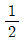
- 1회전
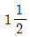
- 2회전
(정답률: 알수없음)
2과목: 기계제도 및 기초공학
21. 다음 설명 중 맞는 것은?
- 물체를 연직상방으로 던져 올렸을 때 올라가는 시간보다 내려오는 시간이 더 짧다.
- 속도가 일정하게 증가 또는 감소하는 운동을 등속운동이라 한다.
- 물체를 자유낙하 시키면 속도는 시간에 반비례하여 증가한다.
- 속도는 단위시간 당 변위의 변화량으로 벡터양이다.
(정답률: 알수없음)
22. 병렬 회로에서 R1=1Ω, R2=3Ω, R3=5Ω일 때 합성 저항은 몇 Ω인가?
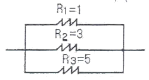
- 9
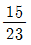
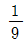
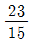
(정답률: 알수없음)
23. 다음 그림에서 스패너를 이용하여 볼트를 조이려고 한다. 이 때 발생하는 토크는 얼마인가? (단, F=300N, r=25cm이다.)
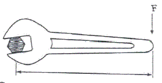
- 12Nㆍcm
- 75Nㆍcm
- 7500Nㆍcm
- 8333Nㆍcm
(정답률: 알수없음)
24. “정지 또는 운동 상태에 있는 물체에 힘이 작용하지 않는 한 그 물체는 정지 또는 등속직선운동을 유지 하려는 성질을 지닌다.” 라고 정의되는 법칙은?
- 질량의 법칙
- 가속도 발생의 법칙
- 관성의 법칙
- 작용반작용의 법칙
(정답률: 알수없음)
25. 지상 30m 높이에 지름 3m, 높이 5m인 원통형 탱크에 물이 가득 채워져 있다. 이 물이 가지고 있는 위치에너지는 약 몇 kJ인가? (단, 중력가속도는 9.807m/s2이다.)
- 10398
- 34618
- 35325
- 98070
(정답률: 알수없음)
26. 가로-세로-높이가 모두 100mm인 사각기둥에 직경이 50mm인 구멍이 밑면에 수직으로 뚫려 있다면 체적(V)은 약 몇 mm3인가? (단, π는 3.14로 한다.)
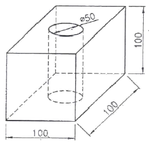
- 965000
- 803750
- 740300
- 392500
(정답률: 알수없음)
27. 다음 중 MKS 단위계의 길이, 질량, 시간의 기본단위로 사용되지 않는 것은?
- N
- m
- kg
- sec
(정답률: 알수없음)
28. 다음 중 전류에 대한 설명으로 틀린 것은?
- 전류는 기전력이라고도 한다.
- 전류는 도체 내의 자유전자들의 움직임이다.
- 암페어[A]를 단위로 사용한다.
- 회로 내 임의의 점에서의 전류의 크기는 매초 그 지점을 통과하는 전하량으로 정한다.
(정답률: 알수없음)
29. 다음 그림과 같은 수평방향의 성분력 F1과 수직방향의 성분력 F2의 합력의 크기 F를 피타고라스 정리를 이용해 구한 식은? (단, F1=Fcosθ, F2=Fsinθ이다.)
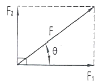
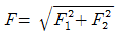
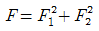
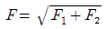
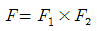
(정답률: 알수없음)
30. 2m의 압축을 받는 정사각형 기둥에 발생 되는 응력을 50N/mm2까지 허용하려면 기둥의 한 변의 길이는 몇 mm로 해야 하는가?
- 100
- 200
- 300
- 400
(정답률: 알수없음)
31. “윈도98”에서 연속되지 않은 여러 개의 파일이나 폴더를 선택하고자 한다. 가장 적절한 방법은?
- “Shift”키를 누르고, 선택하고자 하는 파일을 마우스로 클릭한다.
- “Ctrl”키를 누르고, 선택하고자 하는 파일을 마우스로 클릭한다.
- “Alt”키를 누르고, 선택하고자 하는 파일을 마우스로 클릭한다.
- “Tab”키를 누르고, 선택하고자 하는 파일을 마우스로 클릭한다.
(정답률: 알수없음)
32. 다음 ( )안에 알맞은 것은?
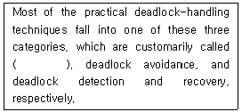
- deadlock waiting
- deadlock prevention
- deadlock preemption
- deadlock exclusion
(정답률: 알수없음)
33. 다음에서 설명하는 스케줄링 기법은?
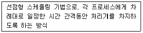
- Round Robin
- Queue
- FIFO
- 널
(정답률: 알수없음)
34. 주기억장치의 용량을 실제보다 크게 활용할 수 있도록 하기 위하여 실제 자료를 보조기억장치에 두고 주기억장치에 있는 것과 같이 처리 시킬 수 있는 기억장치는?
- 가상 기억장치
- 확장 기억장치
- 캐시 기억장치
- 기본 기억장치
(정답률: 알수없음)
35. 여러 파일들을 선택한 후, 한 파일명을 Hrdkorea라고 변경하였을 때, 다른 파일들의 파일명 형식을 올바르게 표현한 것은?
- Hrdkorea(일련번호)
- Hrdkorea[일련번호]
- Hrdkorea{일련번호}
- Hrdkorea＜일련번호＞
(정답률: 알수없음)
36. “윈도 98”의 시스템 도구 중 디스크의 손상된 부분을 점검하여 복구해 주는 것은?
- 디스크 검사
- 디스크 조각 모음
- 디스크 공간 늘임
- 디스크 압축
(정답률: 알수없음)
37. 다음 중 운영체제의 발달 순서를 옳게 나열한 것은?
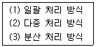
- (2)-(3)-(1)
- (3)-(2)-(1)
- (2)-(1)-(3)
- (1)-(2)-(3)
(정답률: 알수없음)
38. 다음 중 온라인 실시간 시스템의 조회 방식에 가장 적합한 업무는?
- 객관식 채점업무
- 좌석 예약 업무
- 봉급 계산 업무
- 성적 처리 업무
(정답률: 알수없음)
39. 디스크에 저장된 데이터 파일이 분산되어 있거나 경우에 따라서는 파일 시스템이 불안정하게 바뀔 수 있는데, 이 때 분산 저장되었던 파일들을 모두 모아서 차례대로 배열하는 기능을 무엇이라고 하는가?
- 디스크 복사
- 디스크 정리
- 디스크 조각 모음
- 시스템 정보
(정답률: 알수없음)
40. 다음 중 ( )안에 알맞은 용어는?
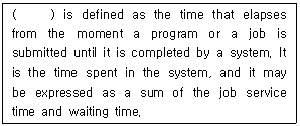
- Seek time
- Response time
- Transfer time
- Turnaround time
(정답률: 알수없음)
3과목: 자동제어
41. 다음 중 PLC 운전을 위한 프로그래밍 순서로 가장 적당한 것은?
- 로딩→코딩→입ㆍ출력할당→시뮬레이션
- 시뮬레이션→입ㆍ출력할당→로딩→코딩
- 입ㆍ출력할당→코딩→로딩→시뮬레이션
- 코딩→시뮬레이션→입ㆍ출력할당→로딩
(정답률: 알수없음)
42. 유압 작동유가 구비하여야 할 조건 중 틀린 것은?
- 압축성이어야 한다.
- 적절한 점도가 유지되어야 한다.
- 장시간 사용하여도 화학적으로 안정되어야 한다.
- 열을 방출시킬 수 있어야 한다.
(정답률: 알수없음)
43. 다음 중 되먹임 제어계의 특징을 설명한 것으로 틀린 것은?
- 제어시스템이 비교적 안정적이다.
- 목표값을 정확히 달성할 수 있다.
- 제어계의 특성을 향상시킬 수 있다.
- 외부 조건 변화에 대한 영향이 크다.
(정답률: 알수없음)
44. CNC 공작기계에서 서보모터의 회전운동을 테이블의 직선운동으로 바꾸는 기구는?
- 볼 스크루
- 베벨기어
- 스퍼기어
- 웜기어
(정답률: 알수없음)
45. 2진수, 111.1을 10진수로 나타내면?
- 6.25
- 6.5
- 7.25
- 7.5
(정답률: 알수없음)
46. CPU가 프로그램을 수행하는 중 다음에 수행할 명령의 주소를 기억하는 레지스터는 어느 것인가?
- MAR(주소레지스터)
- 누산기
- IR(명령레지스터)
- PC(프로그램 카운터)
(정답률: 알수없음)
47.
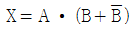
를 간단히 한 것은?- A
- B
- A + B
- AㆍB
(정답률: 알수없음)
48. 1차 시스템의 시정수에 관한 다음 설명 중 옳은 것은?
- 시정수가 클수록 오버슈트가 크다.
- 시정수가 클수록 정상상태오차가 작다.
- 시정수가 작을수록 응답속도가 빠르다.
- PC(프로그램 카운터)
(정답률: 알수없음)
49. 입력이 어떤 정상 상태에서 다른 상태로 변화했을 때, 출력이 정상 상태에 도달할 때까지의 응답은?
- 과도 읍답
- 스텝 응답
- 램프 응답
- 임펄스 응답
(정답률: 알수없음)
50. 함수 F(S)=2/(S+2)의 라플라스 역변환으로서 맞는 것은?
- 2e2t
- -2e-2t
- -2e2t
- 2e-2t
(정답률: 알수없음)
51. 2차 시스템에서 감쇠비 ζ가 1보다 작아질수록 나타나는 현상은?
- 오버슈트가 점점 커진다.
- 진동이 줄어든다.
- 안정시간(settling time)이 짧아진다.
- 안정성이 좋아진다.
(정답률: 알수없음)
52.
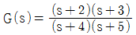
일 때 극값은?- -2, -3
- -3, -4
- -2, -5
- -4, -5
(정답률: 알수없음)
53. 블록선도의 입ㆍ출력비(C/R)는?
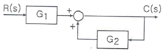
- -1/(G1ㆍG2)
- -(G1/G2)
- G1/(1-G2)
- (G1ㆍG2)/(1+G2)
(정답률: 알수없음)
54. PLC 입력부의 접점으로 사용되는 외부기기가 아닌 것은?
- 리미트 스위치
- 엔코더
- 근접센서
- 전자밸브
(정답률: 알수없음)
55. 서보 전동기는 다음 중 어디에 속하는가?
- 검출기
- 변환기
- 증폭기
- 조작기기
(정답률: 알수없음)
56. 다음 논리도를 식으로 표현하면?
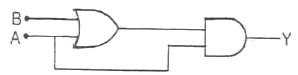
- Y=A(A+B)
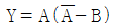
- Y=A+B
- Y=(AB+A)B
(정답률: 알수없음)
57. 커피 자동판매기에 돈을 넣으면 일정량의 커피가 나온다. 이는 무슨 제어에 속하는가?
- 시퀀스 제어
- 되먹임 제어
- 서보 기구
- 폐루프 제어
(정답률: 알수없음)
58. PLC를 이용한 펌프제어시 펌프 이상이나 과부하시 동작하는 계전기는?
- 써멀 릴레이
- 보조 릴레이
- 인터널 릴레이
- 출력 릴레이
(정답률: 알수없음)
59. 다음 그림과 같은 출력을 보이는 PLC 프로그램은?
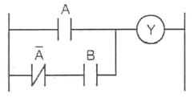
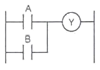
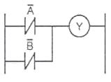
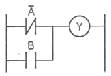
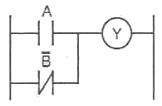
(정답률: 알수없음)
60. 마이크로컴퓨터 입력 인터페이스에 관한 설명 중 틀린 것은?
- 마이크로컴퓨터에 접속하는 입력신호는 아날로그 신호와 디지털 신호로 크게 분류된다.
- 아날로그 신호는 각종 센서나 트랜스듀서 혹은 측정기기로부터의 신호이다.
- 마이크로컴퓨터에 디지털 신호를 넣으려면 D-A 변환기를 통해서 아날로그 신호를 고쳐서 입력해야 한다.
- RS-232C와 같이 규격이 정해져 있는 것은 전용 레벨 변환 IC를 사용한다.
(정답률: 알수없음)
4과목: 메카트로닉스
61. 공압 선형 액추에이터의 특징이 아닌 것은?
- 일반적인 작업 속도는 1~2m/s이다.
- 큰 힘을 내기 어렵고 그 사용 한계는 약 3ton 정도이다.
- 과부하에 대하여 안전하지 못하며 힘과 속도를 조절하기 어렵다.
- 20mm/s 이하의 저속인 경우에는 스틱 슬립 현상이 발생될 수 있다.
(정답률: 알수없음)
62. 전 단계의 작업 완료 여부를 리밋 스위치나 센서를 이용하여 확인한 후 다음 단계의 작업을 수행하는 것으로써 공장 자동화에 가장 많이 이용되는 제어는?
- 조합제어
- 파일럿 제어
- 메모리 제어
- 시퀀스 제어
(정답률: 알수없음)
63. 자석에서 발생되는 자력에 의하여 스위치 작동을 행하는 것은?
- 로드 셀
- 용량형 센서
- 리드 스위치
- 초음파 센서
(정답률: 알수없음)
64. 다음 그림이 나타내는 것은?
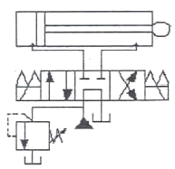
- 단락 회로
- 로크 회로
- 2펌프 회로
- 브레이크 회로
(정답률: 알수없음)
65. 로터리 인덱싱 핸들링 장치를 이용하여 작업하기에 적합한 것은?
- 전체의 길이에 걸쳐 부분적인 공정이 이루어질 때
- 가공물이 여러 가공 공정을 거쳐야 할 때
- 연속된 동일 작업을 수행할 때
- 스트립 형태의 재질이 길이방향으로 작업될 때
(정답률: 알수없음)
66. PLC 프로그램의 최초단계인 0 스텝에서 최후 스텝까지 진행하는데 걸리는 시간을 스캔타임이라 한다. 6μs의 처리속도를 가진 PLC가 1000 스텝을 처리하는데 걸리는 스캔타임은?
- 6×10-3[s]
- 6×10-4[s]
- 6×10-5[s]
- 6×10-6[s]
(정답률: 알수없음)
67. 변위 단계 선도(displacement step diagram)에 대한 설명으로 옳은 것은?
- 단순한 논리 연결을 표현한다.
- 순차제어에서 시간에 대한 정보를 제공한다.
- 플래그, 카운터, 타이머의 기능을 가지고 있다.
- 스텝에 따른 작업요소의 작동순서를 표현한다.
(정답률: 알수없음)
68. 다음 중 차동 실린더를 설명한 것은?
- 피스톤의 양쪽에 로드가 있는 공기압 실린더
- 세로로 나란히 연결된 복수의 피스톤을 갖는 공기압 실린더
- 피스톤 측과 피스톤 로드 측의 면적비가 2:1로 후진 운동 속도가 전진시보다 2배가 되는 실린더
- 제어 위치가 제어 밸브에의 입력 신호의 함수가 되도록 추종 기구를 일체로 해서 가지고 있는 실린더
(정답률: 알수없음)
69. 유압 모터 중 기어모터에 대한 설명으로 틀린 것은?
- 고속회전 시 소음이 적고 정밀한 서보기구에 적합하다.
- 다른 유압 모터에 비해 설계구조가 간단하다.
- 기어 이의 표면에 작용하는 유압에 의해 일정한 토크를 작동 시킨다.
- 기어 모터의 체적은 고정되어 있다.
(정답률: 알수없음)
70. 빛을 이용하여 물체 유무를 검출하거나 속도, 위치결정에 응용되는 센서는?
- 유도형 센서
- 용량형 센서
- 포토 센서
- 리드 스위치
(정답률: 알수없음)
71. 유압시스템에 사용되는 작동유에 대한 수분의 영향과 거리가 먼 것은?
- 작동유의 윤활성을 향상시킨다.
- 작동유의 방청성을 저하시킨다.
- 밀봉작용이 저하된다.
- 작동유의 산화 및 열화를 촉진시킨다.
(정답률: 알수없음)
72. 센서 선정시 고려할 사항이 아닌 것은?
- 감지거리
- 반응속도
- 제조일자
- 정확성
(정답률: 알수없음)
73. 수치제어시스템의 벨트 장력조정에 대한 설명으로 올바르게 된 것은?
- 설치 후 3개월 이내에 실시하고 이후 매 6개월에 1회 정도 실시한다.
- 설치 후 3개월 이내에 실시하고 이후 매 3개월에 1회 정도 실시한다.
- 설치 후 6개월 이내에 실시하고 이후 매 6개월에 1회 정도 실시한다.
- 설치 후 6개월 이내에 실시하고 이후 매 3개월에 1회 정도 실시한다.
(정답률: 알수없음)
74. 다음 중 자동화를 했을 때 특징에 해당되는 것은?
- 생산성 감소
- 인건비 상승
- 제품 품질의 균일화
- 생산탄력성의 향상
(정답률: 알수없음)
75. 목표하는 제어량이 주로 위치 또는 각도이며, 공작기계의 제어에 응용되는 궤환 제어계에 속하는 것은?
- 자동 조정
- 프로세서 제어
- 서보 기구
- 정치 제어
(정답률: 알수없음)
76. 일상용어와 가까운 부호명으로 작성한 소스 프로그램을 기계어로 바꾸는 번역기(번역 프로그램)을 무엇이라 하는가?
- 베이직
- 파스칼
- 에디터
- 어셈블러
(정답률: 알수없음)
77. 유압 회전 액추에이터의 특징에 대한 설명으로 틀린 것은?
- 다른 형식에 비하여 형상은 대형이다.
- 회전 부분의 관성 모멘트가 작다.
- 응답 특성이 우수하다.
- 정ㆍ역전, 정지 동작이 양호하다.
(정답률: 알수없음)
78. 신호처리 방식에 따른 제어의 분류에서 순차적인 제어가 시간의 변화에 따라서 행해지는 제어 시스템을 무엇이라 하는가?
- 비동기제어
- 시간종속 시퀀스제어
- 논리제어
- 위치종속 시퀀스제어
(정답률: 알수없음)
79. 유압시스템에서 펌프의 토출유량 감소 원인으로 적합한 것은?
- 펌프의 흡입불량, 내부 누설의 감소, 공기의 침입
- 탱크내 유면이 낮음, 내부 누설의 증대, 펌프의 흡입불량
- 구동 동력 부족, 과부하 작동, 고압운전
- 펌프의 성능 저하, 고압운전, 외부 누설 증대
(정답률: 알수없음)
80. 플라스틱, 유리, 도자기, 목재 등과 같은 절연물을 검출하는 센서로 맞는 것은?
- 유도형 센서
- 용량형 센서
- 리드 스위치
- 압력센서
(정답률: 알수없음)